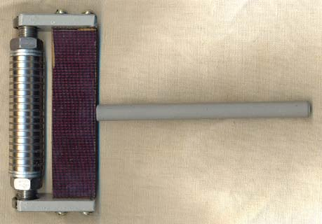
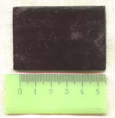
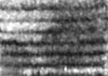
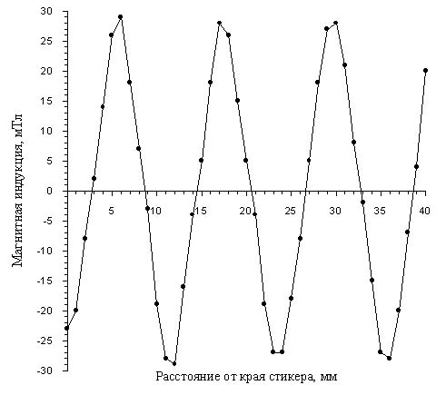

Валик для многополюсного
одностороннего намагничивания листовых
магнитопластов толщиной до 3 мм с ферритовым наполнителем
Чтобы листовой магнитопласт (магнитоэласт), например, магнитный стикер (фридж-магнит) [4] хорошо притягивался к ферромагнитной (стальной) поверхности, он должен представлять из себя многополюсный магнит. Магнитные полюса могут по-разному располагаться на площади листа, в частности, они могут иметь вид параллельных полос с чередованием полярности. Задача многополюсного намагничивания, возникающая при изготовлении листовых магнитопластов (магнитоэластов), магнитной резины или магнитного винила может решаться различными способами [5, 8]. Одним из сравнительно простых способов ее решения является использование намагничивающего валика (рис. 1, 2), позволяющего наносить магнитные полюса в виде параллельных полос с чередующейся полярностью на листовые магнитопласты (магнитоэласты) толщиной до 3 мм (возможно и больше) с феррит-бариевым (феррит-стронциевым) наполнителем [6]. Возможно также намагничивание магнитопластов (магнитоэластов) с наполнителем из редкоземельных магнитных порошков, но не до полного насыщения.
Рис. 1. Намагничивающий валик с зоной намагничивания шириной 50 мм и расстоянием между полюсами 6 мм.
Технические характеристики намагничивающего валика с зоной намагничивания шириной 50 мм и расстоянием между полюсами 6 мм:

Рис. 2. Намагничивающий валик с зоной намагничивания шириной 65 мм и расстоянием между полюсами 4 мм.
Технические характеристики намагничивающего валика с зоной намагничивания шириной 65 мм и расстоянием между полюсами 4 мм:
Способ применения
Листовой магнитопласт расстилается на стальной подложке и при необходимости покрывается тонким слоем немагнитного защитного материала. Если толщина намагничиваемого материала превышает 5 мм, то можно попробовать произвести намагничивание без использования стальной подложки. Валик прокатывается по листу в заданном направлении (вдоль, поперек, по диагонали, зигзагом). Число проходов определяется соотношением размеров листа и ширины зоны намагничивания валика. Если прокатка осуществляется вручную, участки проходов желательно предварительно разметить (если применяется защитный материал, постоянную разметку можно сделать на нем). Некоторая погрешность в расположении магнитных полюсов на площади листа, как правило, не оказывает существенного влияния на его аттрактивные свойства. При намагничивании магнитопластов (магнитоэластов) с наполнителем из редкоземельных магнитных порошков для повышения остаточной индукции можно применить предварительный подогрев образца до температуры примерно 100 0C, но не доводя образец до размягчения. Контроль магнитной индукции на поверхности намагниченного образца можно проводить с помощью тесламетра [7]. Получить визуальное изображение магнитных полюсов удается с помощью магнитного порошка или железных опилок [3].
Пример применения
При намагничивании вручную с помощью валика опытного экземпляра полимерного постоянного магнита для магнитного стикера (фридж-магнита) (рис. 3) были получены магнитные полюса (рис. 4), величина магнитной индукции на поверхности которых достигала +25 и более мТл (рис. 5).

Рис. 3. Полимерный постоянный магнит для магнитного стикера (фридж-магнита). Размер магнита 40 х 60 мм2, толщина 2 мм. Состав: эпоксидная смола, феррит-бариевый порошок (60 ... 70 % по массе). Намагничивание одностороннее, магнитные полюса параллельны длинной стороне.

Рис. 4. Изображение магнитных полюсов на поверхности магнитного стикера, полученное с помощью железных опилок.

Рис. 5. Зависимость величины магнитной индукции на поверхности магнитного стикера от расстояния от края стикера.
Выводы и перспективы
Используя вышеприведенную или аналогичные конструкции намагничивающих устройств [5], можно намагничивать листовые магнитопласты (магнитоэласты, магнитную резину, магнитный винил) вручную или автоматически. При этом геометрия магнитных полюсов может быть произвольной, в зависимости от потребностей, а намагничивание - как односторонним, так и поперечным. Применяя управляемые компьютером приводы, работающие по двум координатам в плоскости, можно наносить сложный магнитный рисунок. Отсутствие значительного энергопотребления позволяет повышать производительность и длительность непрерывной работы установок намагничивания, не заботясь о тепловыделении.
На основе данной разработки спроектированы и изготовлены для практического применения намагничивающие валки [1, 2], позволяющие проводить многополюсное намагничивание в непрерывном режиме листовых магнитопластов (магнитной резины, магнитного винила) шириной до 1050 мм и любой длины (на выходе из экструдера или перемоткой из рулона в рулон).
Ссылки:
16.03.2007
17.03.2007
26.06.2007
23.06.2009
23.07.2011
24.07.2011
Альтернативные источники
энергии
Компьютеры и
Интернет
Магнитные поля
Механотронные системы
Перспективные
разработки
Электроника и
технология